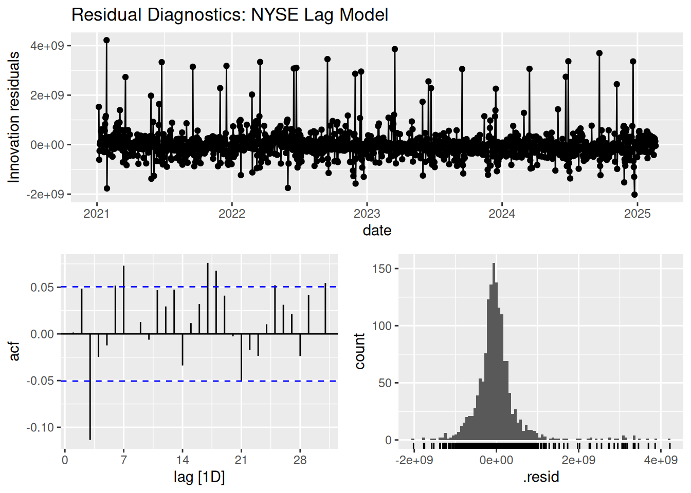

# Get NYSE Composite index data (volume) from tidyquant and convert to tsibble
nyse <- tq_get("^NYA", from = "2021-01-01", to = Sys.Date(), get = "stock.prices") %>%
as_tsibble(index = date) %>%
fill_gaps() %>%
mutate(volume = na.approx(volume),
adjusted = na.approx(adjusted),
logVolume = log(volume)) %>%
select(date, volume, logVolume, adjusted)
# Plot volume series
nyse %>%
autoplot(volume) +
labs(title = "NYSE Composite Index Volume", y = "Volume", x = "Date")
# Create extended lag structure (4 weeks backward)
nyse <- nyse %>%
mutate(volume_lag1 = lag(volume, 1),
volume_lag2 = lag(volume, 2)) %>%
drop_na()